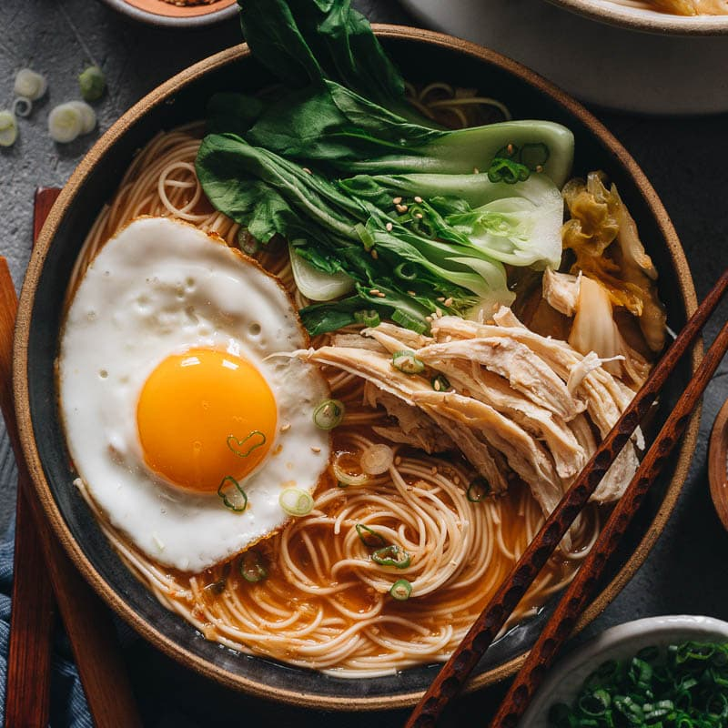

Noodle Soup

Description
I first made up this soup for a friend who loves Korean food but lives on a low-carb diet. I thought it would be a one-time wonder, but it is such a forgiving recipe that I now make it when I need a meal with only a few ingredients.
It can take different vegetables, noodles, and proteins and will still taste good. While the recipe calls for brisket, you can use an equal amount of raw tofu, rotisserie chicken, or canned tuna in this soup with great success. This recipe calls for Tofu Shirataki noodles, which are low-carb Japanese noodles. But if you are not on a low-carb diet, you can use other Asian noodles; I like to use udon or sweet potato noodles.
Ingredients
- 1 Cup Chopped Cabbage
- 2 Tablespoon Soy Sauce
- 1 Teaspoon Chopped Garlic
- 1 Teaspoon Sesame Oil
- 2 Tablespoons Kochukaru Chili Pepper Flakes
- 4 Cups Water
- 6 Ounces Sliced Brisket
- 1 Tablespoon Kochujang Chili Pepper Paste
- 1 Large Beaten Egg
- 8 Ounces Tofu Shirataki, Cooked According To Package Directions
- 1/2 Scallion, Chopped, Optional
Steps
- Gather the ingredients.
- In a soup pot over medium heat, stir fry cabbage with soy sauce, garlic, sesame oil, and chili pepper flakes for a few minutes, or until the leaves begin to look transparent.
- Add water or broth and bring to a boil.
- Reduce to a simmer and stir in chili pepper paste.
- Add protein (except for tofu which you would add later if using) to pot and wait for soup to simmer again.
- Slowly stream in beaten egg.
- After 15 minutes, add in noodles (and tofu if using) and cook for 4 more minutes.
- Salt to taste and garnish with scallions if using.